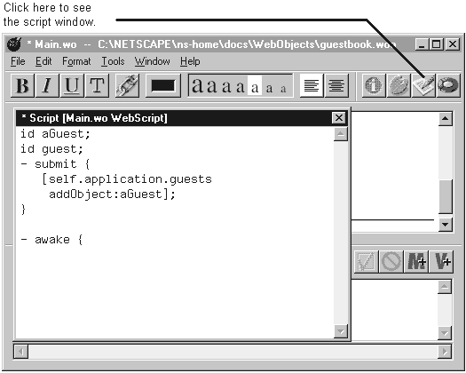

Table of Contents
Table of Contents
 Previous Section
Previous Section
Table of Contents
Previous Section
Click the script button to open the script window.
Type the method's implementation into the script window.

Methods perform the action of a component. Components usually define several methods. The script window shows the implementation of all of the component's methods.
After you add a method to the script file, the component window displays that method in the object browser so that it's possible to bind a dynamic element on the page to the method.
If you're unsure of the method syntax, you can use the object browser's add method button (the button with an M+) to create the method. This creates a method named action, lists it in the object browser, and creates its declaration in the script file. You can then open the script window, change the name, and type its implementation.
WebScript supports two different syntax styles. Set your style preference in the Preferences panel. See "Setting the Style Preference."
 Next Section
Next Section